Analysis
run_id: fedjev-2026-09-20 model: jev-1.13.0 (TypeSafe SystemOne) criterion (exact): more hawkish about inflation repository: maybern-tripp-smith/fedjev-bench pages: https://maybern-tripp-smith.github.io/fedjev-bench/
Companion gate tables: REPORT.md. Scoreboard guide: HOW_TO_READ.md. Machine-readable estimates: results/gates.json. Estimator glossary: results/interpretation.json. Gate 7 matching and fidelity (external consistency with published FedLock scores, not a TrueSkill replication): results/fedlock_fidelity.md. FedLock-faithful TrueSkill replica (separate experiment): results/fedlock_replica/FINDINGS.md.
Abstract
Same-day changes in the federal funds target are a convenient but incomplete label for the hawkishness of Federal Open Market Committee (FOMC) communication. Policy actions and textual stance often co-move on scheduled action days. They need not coincide when the Committee leaves the target unchanged.
This note reports a pre-registered evaluation of TypeSafe/Jev on chair press-conference openings. The protocol is pairwise Choice under the fixed criterion string more hawkish about inflation, presented in both orders, aggregated by Bradley–Terry (BT) — a pairwise strength model on a fixed gold-pair graph — with a secondary direct Score pass. Seven gates examine construct validity on easy pairs, rank agreement with same-day target moves, separation of holds from cuts on the text axis, forward-path correlation, order and name stability, and external consistency with FedLock, an independent published text-scoring project (methodology).
Primary quantities are reported with standard errors (s.e.) and, where applicable, bootstrap percentile confidence intervals. Gate 4 is a construct-validity result: when the target is unchanged, d_same is identically zero and cannot encode hawkish- versus dovish-hold language. Gate 7 is Spearman’s rank correlation — do two orderings of meetings agree? — between this repository’s Bradley–Terry / Score series and FedLock’s published press-conference scores: raw TrueSkill mean m, and era-adjusted mean ma (m after subtracting a quarterly average). Gate 7 reads those published scores; it does not re-run FedLock’s TrueSkill tournament or its macro-conditioned judge. A separate protocol-fidelity experiment is in §12.
1. Introduction
Work on FOMC language often treats the realized same-day target-rate change as a proxy for how hawkish a communication was. That proxy mixes two constructs, defined once here and used throughout.
The behavioral measure is the Committee’s voted action. The series used below is d_same, the same-day change in the funds target (hike, hold, or cut), together with dissent counts where available.
The textual measure is the stance expressed in the Chair’s opening remarks about inflation, the labor market, and the policy path, recovered under a fixed pairwise criterion.
On scheduled action days the two series frequently align. On holds (d_same = 0), and across regimes—for example 2020 easing communications versus 2022–23 holds with hawkish inflation language—alignment is not guaranteed. The evaluation therefore asks three measurement questions.
First, under a fixed pairwise criterion, does the ranking recover obvious hawk-versus-dove document orderings? Second, on scheduled action days, does it agree in rank with d_same? Third, on the text axis, do holds sit above cuts—as would be expected if same-day funds-rate changes are an incomplete label for textual hawkishness when the target is unchanged?
Gates were registered before any Jev output. Pass/fail applies to Gates 1, 3, 4, and 6. Gates 2, 5, and 7 are report-only or secondary.
The note is a measurement exercise. It does not identify a causal effect of communication on rates, markets, or subsequent policy.
2. Related work
| Work | Contribution | Use in this evaluation |
|---|---|---|
| jsort (keltokhy/jsort) | Statement ranking; published Spearman versus same-day move ≈ +0.46 | Label formulas (d_same, d_90, d_2y); Gate 3 signal line (+0.30) and published reference (+0.46) |
| Shah et al. (gtfintechlab/fomc-hawkish-dovish; CC BY-NC 4.0) | Sentence-level hawk/dove/neutral labels | Stratum B; Gate 2 report-only |
| FedLock (jnathan9.github.io/fedlock) | Independent pairwise tournament on anonymized speeches: a large language model (Llama 3.3 70B) chooses the more hawkish stance given contemporaneous macro conditions; wins are aggregated with TrueSkill (Microsoft’s Bayesian skill-rating system) over ~60,000 comparisons and ~4,000 speeches. Published fields include raw mean m and era-adjusted ma. | Gate 7 external consistency (report-only): rank agreement with those published scores; see §6. The TrueSkill replica in §12 is a different claim. |
jsort supplies the behavioral-label algebra and a published rank-correlation reference. Shah supplies sentence gold for a stress test that is not used to pass or fail the document-level claim. FedLock supplies an independent meeting-day text score. None of these sources is treated as a ground-truth hawkishness index.
3. Data
| Corpus | Path | Role |
|---|---|---|
| Chair press-conference openings | data/clean/statements.jsonl (~95 documents) | Document-level Choice and Score |
| Shah sentences | data/clean/sentences.jsonl | Stratum B |
| Meeting calendar and FRED labels | data/labels/meetings.parquet | d_same, d_90, d_2y, dissent counts, exclusions |
| FedLock snapshot | data/raw/fedlock/data.json | Published press-conference scores for Gate 7 (m raw mean, ma era-adjusted, s uncertainty). Llama is not re-invoked. |
| FRED CSVs | data/raw/fred/ | DFEDTARU, DGS2 |
Labels (jsort-aligned). d_same = DFEDTARU[t+1] − DFEDTARU[t−1]. y_action = sign(d_same). d_90 = DFEDTARU[t+90] − DFEDTARU[t]. d_2y = DGS2[t] − DGS2[t−1].
Openings vs full pressers; length. Documents are chair openings extracted from press-conference PDFs, not full Q&A pressers. Relative to jsort’s default --max-chars 8000, 39/95 openings exceed 8,000 characters (AUDIT §13). That bindingness is recorded as a design fact; the frozen main protocol is unchanged.
Exclusions (pre-registered). Drop 2020-03-03 and 2020-03-15 (unscheduled) and other exclude_main or unscheduled rows from the main analysis. Flag 2023-03-22 (SVB) without dropping.
Gold strata (frozen before scoring). A, extreme document pairs, n=40. B, Shah hawk versus dove sentences, n=200, seed 20260920. C, adjacent scheduled meetings with nonzero change in d_same, n=22. Manifest: data/pairs/PAIR_MANIFEST.md.

score_jev) on scheduled openings in the main sample (crisis dates dropped; n=93). Marker shape is the same-day action: hike, hold, or cut. The teal circle marks 2023-03-22 (SVB), which is flagged and retained. Holds sit at a wide range of text scores even though d_same is zero.4. Measurement
Choice (primary). Criterion string: more hawkish about inflation. Each gold pair is presented in both orders (ab and ba). Choice probabilities are mapped to the gold side and averaged. An inversion is an averaged winner that does not match gold. Chair names and ISO dates are stripped (scripts/strip_meta.py).
Score (secondary). A five-level ordinal rating is mapped to a continuous score_jev for each opening.
Bradley–Terry. BT scores use Strata A and C Choice probabilities. Shah pairs are excluded because they are sentence-level. This run: n_statements=48, n_comparisons=124, converged=True, position bias γ=-0.1378. The comparison graph is sparse. The BT se in statement_scores.csv is fit uncertainty from the pairwise likelihood, not a meeting-sampling STE.
Uncertainty. Spearman: bootstrap STE (standard deviation of 1,000 meeting resamples) and percentile 95 percent confidence interval. Inversion: binomial STE √[p(1−p)/n]. Means and Brier scores: STE = sd/√n. Gate 4 gap STE = √(ste_holds² + ste_cuts²).
5. Pre-registered gates and results
| # | Gate | Pass line | Result |
|---|---|---|---|
| 1 | Easy-pair inversion (A) | ≤ 0.05 | PASS — rate=0.0000 (n=40, STE=0.0000) |
| 2 | Sentence discrimination (B) | report | inv=0.1900 STE=0.0277; Brier=0.1384 STE=0.0156 (n=200) |
| 3 | Action ranking | Spearman ≥ +0.30 | PASS — BT all=+0.623 (n=46, STE=0.096) [+0.398, +0.787]; action=+0.851 (n=24, STE=0.074) [+0.652, +0.937] |
| 4 | Holds versus cuts | mean(holds) > mean(cuts) | PASS — BT gap=+0.519 STE=0.368 (n_h=22, n_c=8) |
| 5 | Forward path (d_90) | secondary | BT=+0.357 (n=44, STE=0.154) [+0.042, +0.627]; score_jev=+0.511 (n=91, STE=0.081) [+0.336, +0.652] |
| 6 | Order/name stability | Δ inv ≤ 0.05 | PASS — Δ=0.0000 |
| 7 | FedLock consistency (published-score agreement; not a TrueSkill replication) | report | BT vs raw m=+0.679 (n=46, s.e.=0.112) [+0.436, +0.861]; vs era-adjusted ma=+0.594 (n=46, s.e.=0.104) [+0.361, +0.770]; score_jev vs m=+0.944 (n=90, s.e.=0.016) [+0.900, +0.966]; vs ma=+0.774 (n=90, s.e.=0.044) [+0.673, +0.839] |
5.1 Inversion by stratum
| Stratum | n | inverted | inversion (STE) | mean p(gold) | mean Brier (STE) | order-flip |
|---|---|---|---|---|---|---|
| A extreme | 40 | 0 | 0.000 (0.000) | 1.000 | 0.000 (0.000) | 0.000 |
| B Shah | 200 | 38 | 0.190 (0.028) | 0.745 | 0.138 (0.016) | 0.105 |
| C adjacent | 22 | 1 | 0.045 (0.044) | 0.855 | 0.046 (0.018) | 0.091 |
Stratum A has no inversions. The inverted adjacent pair is C018. Gate 2 (19 percent inversion) is a sentence-level stress test. It is not a pass/fail of the document-level claim.


5.2 Gate 3 — rank agreement with policy actions
| Slice | BT Spearman ρ [STE; 95% CI] | n |
|---|---|---|
| All scheduled (excl. crisis) | +0.623 (n=46, STE=0.096) [+0.398, +0.787] | 46 |
action_days (d_same≠0) | +0.851 (n=24, STE=0.074) [+0.652, +0.937] | 24 |
| hold_days vs (n_hawk−n_dove) | −0.192 (n=22, STE=0.202) [−0.513, +0.274] | 22 |
hold_days vs d_2y | −0.135 (n=22, STE=0.244) [−0.594, +0.349] | 22 |
Secondary score_jev: all=+0.589 (n=93, STE=0.063) [+0.460, +0.701]; action=+0.918 (n=30, STE=0.033) [+0.812, +0.953].
Action-day ρ exceeds all-scheduled ρ because holds contribute no variation in d_same. Spearman versus d_same on holds alone is undefined and is not computed. Hold-day associations with net dissents and d_2y are weak. That pattern is consistent with holds mixing hawkish-hold and dovish-hold communications.
The jsort published reference is Spearman ≈ +0.46 (STE not re-estimated here). BT action-day ρ=+0.851 (STE=0.074) exceeds both the pre-registered +0.30 line and that published point estimate. Bootstrap intervals on the action-day and all-scheduled slices exclude zero.

d_same on scheduled meetings excluding unscheduled crisis dates. Left: Bradley–Terry (n=46). Right: score_jev (n=93). Triangles are action days; circles are holds (d_same = 0). The teal outline is 2023-03-22 (SVB). Spearman ρ and bootstrap STE are the Gate 3 all-scheduled estimates. Holds form a vertical stack because the behavioral label does not vary.
d_2y have intervals that include zero. Vertical lines mark the pre-registered +0.30 pass line and the jsort published point estimate +0.46.5.3 Gate 4 — holds versus cuts on the text axis
| Score | mean holds (STE, n) | mean cuts (STE, n) | mean hikes (STE, n) | gap holds−cuts (STE) |
|---|---|---|---|---|
| BT | −0.720 (0.335, 22) | −1.239 (0.153, 8) | 1.827 (0.532, 16) | +0.519 (0.368) |
| score_jev | 1.457 (0.114, 63) | 1.036 (0.122, 9) | 3.067 (0.135, 21) | +0.421 (0.167) |
Under holds, d_same is identically zero. It therefore cannot encode hawkish- versus dovish-hold communications. A higher mean text score on holds than on cuts indicates that the textual measure separates these regimes where the same-day behavioral label cannot.
This is a construct-validity result: same-day funds-rate changes are an incomplete label for textual hawkishness when the target is unchanged. It is not a claim that text overrides the voted action, nor a judgment of policy correctness.
The BT gap 95 percent interval includes zero ([−0.202, +1.239]). The score_jev gap interval does not ([+0.094, +0.749]). The pre-registered pass rule is the point comparison mean(holds) > mean(cuts).

score_jev: cuts 1.036 (STE 0.122, n=9); holds 1.457 (STE 0.114, n=63); hikes 3.067 (STE 0.135, n=21); gap +0.421 (STE 0.167). Holds sit above cuts on both scales.5.5 Gate 5 — forward path
BT versus d_90: +0.357 (n=44, STE=0.154) [+0.042, +0.627]. score_jev versus d_90: +0.511 (n=91, STE=0.081) [+0.336, +0.652]. The gate is secondary.

d_90). Markers follow the same-day action, not the forward path. Left: BT, n=44. Right: score_jev, n=91. Spearman ρ and bootstrap STE are the Gate 5 estimates. Intervals exclude zero on both slices.5.4 Gate 6 — name ablation
Baseline inversion (names stripped) = 0.0000. Names left in = 0.0000. Δ = 0.0000 ≤ 0.05 (PASS). Add-on cost $0.010955 (80 calls).
Openings rarely embed Chair names or ISO dates that the stripper can remove. The zero delta is therefore more informative about order stability than about name confounding.
6. Relationship to FedLock
Full fidelity note, written to be re-implemented from frozen artifacts: results/fedlock_fidelity.md.
Two claims, kept apart. Gate 7 asks whether this repository’s Bradley–Terry and Score series agree in rank with FedLock’s already published press-conference scores. Section 12 asks whether a new TrueSkill tournament, run on the 95 openings under FedLock V3’s documented protocol, recovers a similar ordering. Gate 7 does not re-run TrueSkill. Section 12 does not replace Gate 7.
What published FedLock is. FedLock V3 (methodology) is a pairwise tournament: Llama 3.3 70B sees two anonymized speeches and is asked which takes the more hawkish monetary-policy stance given contemporaneous macro conditions — core personal consumption expenditures inflation, the unemployment rate, real gross domestic product growth, and the CBOE Volatility Index. Wins are aggregated with TrueSkill (prior mean μ₀ = 50, prior uncertainty σ₀ ≈ 8.33, stop when every speech’s uncertainty σ < 2) over roughly 60,000 comparisons and 4,000 speeches. This repository does not re-invoke Llama. It reads the snapshot in data/raw/fedlock/data.json. The headline published field is raw mean m. Era-adjusted ma subtracts a quarterly average and is reported here only as a sensitivity. Field s is TrueSkill uncertainty; mean s on the matched main-analysis set is 1.7762.
What Gate 7 shares, and what it does not. Shared: pairwise textual hawkishness as the object of measurement; name and date stripping on this repository’s Jev Choice calls; use of FedLock press_conference scores as an external reference. Not reproduced on the Gate 7 left-hand side: macro-conditioned judge prompts; TrueSkill; Swiss or uncertainty-targeted pairing; the full speech corpus; the Llama judge. The left-hand series remain Bradley–Terry (fixed gold-pair graph) and the direct Score pass (score_jev).
Matching. Prefer the meeting date embedded in the FedLock title; otherwise the FedLock d field with calendar offsets 0, +1, −1, +2 days. Matched meetings = 92; main-analysis matched = 90; same-calendar-day on the d field = 1; offset distribution = {'0': 1, '1': 89}; match route = {'title_date': 90}.
Rank agreement. Spearman’s rank correlation (ρ) asks whether the two series produce a similar ordering of meetings. The standard error (s.e.) is the standard deviation of 1,000 bootstrap meeting resamples; the 95 percent interval is the percentile interval from the same resamples.
| Contrast | ρ | Standard error | n | 95% confidence interval |
|---|---|---|---|---|
Bradley–Terry vs m (raw) | +0.679 | 0.112 | 46 | [+0.436, +0.861] |
Bradley–Terry vs ma (era-adjusted) | +0.594 | 0.104 | 46 | [+0.361, +0.770] |
score_jev vs m | +0.944 | 0.016 | 90 | [+0.900, +0.966] |
score_jev vs ma | +0.774 | 0.044 | 90 | [+0.673, +0.839] |
Agreement with raw m is stronger than with era-adjusted ma, especially for score_jev (ρ = +0.944, s.e. = 0.016, n = 90). The corpora differ: chair openings are not necessarily full FedLock press-conference transcripts.

m and era-adjusted ma (n = 46). Bottom: score_jev versus m and ma (n = 90). Marker shape is the same-day funds-target action (the behavioral label d_same), not the FedLock score. Spearman ρ and bootstrap standard errors match the Gate 7 table. The teal outline is 2023-03-22. This is agreement with an independent text score. It is not a TrueSkill or macro-conditioned replication.
score_jev series against FedLock raw m (left; ρ = +0.944, s.e. = 0.016, n = 90) and era-adjusted ma (right; ρ = +0.774, s.e. = 0.044, n = 90). The raw contrast is near a rank ceiling. Experiment 7 in §11 is a separate macro-relative Choice design on gold pairs; it is not this figure and is not the §12 TrueSkill replica. The panel uses the Gate 7 series that are in results/.7. How to read the estimates
Plain-language scoreboard (what each gate answers; PASS versus report; strong / weak / inconclusive for this design): HOW_TO_READ.md.
| Quantity | Meaning in this note |
|---|---|
Spearman ρ vs d_same | Rank agreement between meeting-level text hawkishness and the same-day target move |
| Why action-day ρ exceeds all-scheduled ρ | Holds add no d_same variation and dilute the pooled correlation |
Hold-day ρ vs d_same | Undefined; not computed (d_same is constant 0) |
| Gate 4 gap | Mean text score(holds) − mean text score(cuts) |
| Inversion 0 on Stratum A | Averaged two-order winner matched gold on easy pairs. Does not imply calibration on hard pairs or policy forecasting |
BT se | Uncertainty from the pairwise BT likelihood, not a bootstrap over meetings |
| Haiku versus Jev | Winner agreement (inversion) is the accuracy comparison. Listed USD and per-call latency are separate axes |
| Standard error (s.e.) | Uncertainty as defined in §4 for each estimator family. Written “standard error” or “s.e.” — not STE |
| Gate 7 vs §12 | Gate 7 = Spearman agreement with published FedLock m / ma. §12 = a separate TrueSkill tournament on 95 openings. Do not treat the main gates as a TrueSkill replication |
8. Implementation cost and latency
List price for jev-1.13.0 in this run: $0.042 per million input tokens; output free. Main run ≈ $0.03120 (619 calls; 524 Choice + 95 Score). Name-ablation add-on ≈ $0.011. Grand total ≈ $0.042. Mean per-call latency ≈ 214 ms at concurrency 6. Approximate wall time under perfect parallelism is sum/6 (~22 s). See results/cost.json and results/timing.json.
Same-protocol Choice comparison (Claude Haiku 4.5)
| Jev 1.13.0 | Haiku 4.5 | |
|---|---|---|
| Stratum A / C inversion | 0.000 / 0.045 | 0.000 / 0.045 |
| Stratum B inversion | 0.190 | 0.170 |
| Choice USD | ≈ $0.024 | ≈ $0.636 (~27×) |
| Mean latency | ≈ 207 ms | ≈ 676 ms (~3.3×) |
On Strata A and C the inversion rates are identical. On Shah, Haiku inversion is 0.170 versus 0.190 for Jev, with a higher Haiku order-flip rate (0.24 versus 0.105). Winner agreement is the primary accuracy comparison. Listed cost and latency are reported separately and are not used as gate criteria.

9. Interpretation and limitations
Construct validity (Gate 1). Zero inversion on Stratum A indicates that, under the fixed criterion and dual-order protocol, the ranking recovers obvious hawk-versus-dove document orderings.
Rank agreement on action days (Gate 3). BT ranks track d_same on scheduled action days above the pre-registered +0.30 line and above the jsort +0.46 published point estimate. Bootstrap intervals exclude zero. This is rank agreement with a behavioral label, not identification of a policy-rule residual.
Incomplete behavioral labels under holds (Gate 4). When the target is unchanged, d_same cannot distinguish hawkish-hold from dovish-hold text. Higher mean text scores on holds than on cuts are informative about the textual construct where the behavioral label is uninformative. Same-day funds-rate changes are therefore an incomplete label for textual hawkishness under holds.
External consistency (Gate 7). This repository’s scores agree in rank with an independent FedLock text score, more so for the Score pass versus raw m (ρ = +0.944, s.e. = 0.016, n = 90) than versus era-adjusted ma (ρ = +0.774, s.e. = 0.044, n = 90). Combined with the fidelity statement in §6, this is agreement between two text measures. It is not a TrueSkill or macro-conditioned replication. The protocol-fidelity experiment is §12.
Limitations. The BT graph is sparse (48 statements, 124 comparisons). The dissent scrape is incomplete, so hold-day dissent correlations are noisy. Chair openings are not full press conferences. The evaluation uses a single criterion string and a single model version. The Gate 4 BT gap interval includes zero. Follow-on designs listed in §11 are not estimated in this run.
10. Reproducibility
git clone https://github.com/maybern-tripp-smith/fedjev-bench
cd fedjev-bench
python -m venv .venv && source .venv/bin/activate
pip install typesafe-sdk pandas pyarrow openpyxl scipy matplotlib
export TYPESAFE_API_KEY=... # never commit
python score.py --live --full
python scripts/run_name_ablation.py --live
python scripts/analyze_gates.py
python scripts/plot_figures.pyFrozen inputs: data/pairs/gold_pairs.jsonl, data/clean/, data/labels/. Outputs: results/, runs/jev/. Cached answers under runs/jev/ permit offline re-analysis via python scripts/analyze_gates.py. Figures: python scripts/plot_figures.py writes SVG/PNG to results/figures/ and docs/figures/.
11. Additional Jev primitives (experiments 3–7)
These runs exercise typed System One primitives that the pairwise Choice gate set does not use. They are exploratory relative to the pre-registered gates; estimates include STE where reported in results/experiments/.
run_id: fedjev-2026-09-20 model: jev-latest (TypeSafe SystemOne; resolved model ids logged per call) criterion family: inflation / hawkishness cost (this experiment suite): $0.04453 over 385 logical calls (0 cache hits; 1060179 input tokens at $0.042/MTok input).
This section reports five follow-up probes that hold the corpus, gold pairs, and primary criterion family fixed while varying the question interface (multi-Score composite, multi-label Noul, paraphrase Choice, span Choice, and macro-conditioned Choice). Gold labels are unchanged: Stratum A extremes remain rate-path constructed; document-level d_same remains the FRED same-day funds-target move. All live calls use jev-latest via typesafe-sdk; answers are cached under runs/jev/exp_cache/.
Experiment 3 — Composite atomic Scores
#### Methods
For each of 95 presser-opening statements (meta-stripped), a single SystemOne request elicited four ordered Scores (levels 0–4) jointly with the Exp4 Nouls (cost sharing). Dimensions and equal weights:
| Dimension | Weight | Construct |
|---|---|---|
inflation_urgency | 0.25 | Urgency of the inflation fight |
tightness_preference | 0.25 | Preference for tighter policy |
reaction_toughness | 0.25 | Toughness of reaction function / willingness to accept growth pain |
guidance_firmness | 0.25 | Firmness of forward guidance / higher-for-longer tone |
Composite = equal-weight mean of the four scores ($w_d = 1/4$). Correlations use Spearman rho with bootstrap STE (1,000 resamples, seed 20260920) on scheduled, non-excluded, non-crisis meetings (n=93). Ablation drops one dimension and re-averages the remaining three with equal weight.
#### Results
- Composite vs
d_same: rho=0.562 (n=93, STE=0.063) - Composite vs
d_same(action days only): rho=0.893 (n=30, STE=0.037) - Composite vs existing
score_jev: rho=0.962 (n=93, STE=0.010) - Composite vs FedLock press-conference raw mean
m(published TrueSkill score; meeting ±1 day match; this is the same external text comparison as Gate 7, not the §12 replica): rho=0.957 (n=90, s.e.=0.012)
Leave-one-dimension-out (Delta-rho vs full composite on d_same):
- Drop
inflation_urgency: rho=0.634 (n=93, STE=0.055); Delta-rho vs full = 0.072 - Drop
tightness_preference: rho=0.502 (n=93, STE=0.073); Delta-rho vs full = -0.060 - Drop
reaction_toughness: rho=0.607 (n=93, STE=0.057); Delta-rho vs full = 0.045 - Drop
guidance_firmness: rho=0.513 (n=93, STE=0.069); Delta-rho vs full = -0.048
Artifacts: results/experiments/exp3_composite.json, exp3_composite.csv.
#### Interpretation
The four-way composite is a structured absolute score of communicated stance, not a pairwise Choice aggregate. Concordance with score_jev tests whether the richer rubric collapses to the single hawkishness Score used in the main run; concordance with d_same (the same-day funds-target behavioral label) and with FedLock raw m (an independent text score) situates the composite in the same external comparisons as Gates 3 and 7. Ablation Delta-rho identifies which atomic construct carries most of the association with the rate move.
#### Limitations
Equal weights are a pre-specified convenience, not estimated from data. Score levels are verbal rubrics whose interval scaling is assumed when averaging. d_same labels policy outcomes, not text; holds can be text-hawkish, so modest rho is expected and is not by itself a failure of the composite.
Experiment 4 — Multi-label Nouls
#### Methods
The same packed SystemOne call returned four Nouls (yes-probability in [0,1]): signals_cut_soon, signals_higher_for_longer, acknowledges_banking_stress, blames_supply_shocks. Eras are calendar partitions (2020; 2022 hike year; 2023-03-22 SVB meeting; other 2023; 2024; 2025–26; residual). Multi-label cases are documents with at least two Nouls >= 0.6. Pairwise Spearman among Nouls documents mutual non-exclusivity.
#### Results
Mean Noul by era:
- 2020 (n=9): signals_cut_soon=0.24, signals_higher_for_longer=0.05, acknowledges_banking_stress=0.18, blames_supply_shocks=0.20
- 2022_hikes (n=8): signals_cut_soon=0.03, signals_higher_for_longer=0.77, acknowledges_banking_stress=0.04, blames_supply_shocks=0.49
- 2023_SVB (n=1): signals_cut_soon=0.12, signals_higher_for_longer=0.61, acknowledges_banking_stress=0.99, blames_supply_shocks=0.08
- 2023_other (n=7): signals_cut_soon=0.07, signals_higher_for_longer=0.89, acknowledges_banking_stress=0.20, blames_supply_shocks=0.07
- 2024 (n=8): signals_cut_soon=0.46, signals_higher_for_longer=0.60, acknowledges_banking_stress=0.04, blames_supply_shocks=0.12
- 2025_26 (n=14): signals_cut_soon=0.29, signals_higher_for_longer=0.44, acknowledges_banking_stress=0.04, blames_supply_shocks=0.62
- other (n=48): signals_cut_soon=0.11, signals_higher_for_longer=0.13, acknowledges_banking_stress=0.09, blames_supply_shocks=0.37
2023-03-22 (SVB) banking Noul: acknowledges_banking_stress = 0.99 (other Nouls that meeting: cut_soon=0.12, H4L=0.61, supply=0.08; doc stmt-2023-03-22).
Documents with >=2 high Nouls: n=9 (threshold 0.6). Pairwise Noul Spearman is reported in exp4_nouls.json (noul_pair_spearman).
#### Interpretation
Nouls are not mutually exclusive by construction: a text may both acknowledge banking stress and retain a higher-for-longer signal. Era means are descriptive; the SVB meeting is a targeted face-validity check for acknowledges_banking_stress.
#### Limitations
Era bins are coarse and unbalanced. Noul probabilities are calibrated only insofar as SystemOne's Noul primitive is; we do not claim frequentist coverage. Supply-shock attribution (blames_supply_shocks) can co-occur with hawkish urgency when the Committee describes shocks yet still tightens.
Experiment 5 — Calibration / paraphrase consistency
#### Methods
Stratum A (40 extreme pairs) times both presentation orders. Baseline instructions (main run, cached): "Which of Text A or Text B is more hawkish about inflation". Two meaning-preserving paraphrases (exact strings logged):
- "Which of Text A or Text B argues for a tighter stance against inflation"
- "Which of Text A or Text B is less accommodative on inflation"
Metrics: inversion rate vs gold; mean |p_gold,para - p_gold,baseline|; order-flip rate per paraphrase; reliability diagram (10 equal-width bins of p_gold vs empirical non-inversion frequency) and ECE.
#### Results
- Baseline: inversion=0.0 (n=40, STE=0.0); order-flip=0.0; ECE=0.0; mean p_gold=1.0.
Paraphrases:
para_tighter_stance— instructions: "Which of Text A or Text B argues for a tighter stance against inflation". Inversion 0.0 (n=40, STE=0.0). Order-flip rate 0.0. Mean |p_gold - p_gold_baseline| = 0.0. ECE = 0.0.para_less_accommodative— instructions: "Which of Text A or Text B is less accommodative on inflation". Inversion 0.0 (n=40, STE=0.0). Order-flip rate 0.0. Mean |p_gold - p_gold_baseline| = 0.002250000000000002. ECE = 0.0022499999999998632.
Artifact: results/experiments/exp5_calibration.json.
#### Interpretation
Low inversion under paraphrase indicates criterion-string robustness within the inflation-hawkishness family. ECE and reliability bins summarize whether reported p_gold tracks empirical accuracy; large mean |Delta p| with stable winners would indicate confidence instability without rank changes.
#### Limitations
Stratum A is deliberately easy (rate extremes); calibration on hard / adjacent pairs may differ. Paraphrases were author-chosen, not sampled from a paraphrase model. Baseline and paraphrase calls are not contemporaneous (baseline from the main run cache).
Experiment 6 — Evidence-span Choice
#### Methods
50 items (cap 50, seed 20260920): one Shah hawkish sentence as gold plus 3–5 distractors drawn preferentially from the same (year, doc_type) pool of neutrals/doves, else from the global dove/neutral pool. Choice options are span ids (S1…); instructions: "Which span is more hawkish about inflation". No free-form generation.
#### Results
- Inversion rate: 0.48 (n=50, STE=0.07065408693062278, n_inverted=24)
- Mean p(gold): 0.4836000000000001 (STE=0.05465868864963703)
- Approx. live cost: $0.00118831
Artifact: results/experiments/exp6_span_choice.json.
#### Interpretation
Span Choice tests whether Jev can select a hawkish inflation span among local distractors, complementary to pairwise document Choice. Chance baseline depends on option count (3–5 distractors implies 4–6 options; chance p approximately 1/K).
#### Limitations
Shah labels are sentence-level and domain-specific; "nearby" is operationalized as same year and document type, not true transcript adjacency (positional offsets are unavailable in sentences.jsonl). Distractor difficulty is uncontrolled beyond label class.
Experiment 7 — Macro-relative vs text-absolute
#### Methods
Stratum A times both orders. Absolute arm: text-only Choice with the main-run criterion (cached). Macro arm: state includes Text A, Text B, and macro_A / macro_B with FRED as-of each document date — core PCE (PCEPILFE 12-month YoY when available, else level), UNRATE, and DGS10 as the risk/rate proxy (VIXCLS absent from the local FRED dump). Instructions: "Which of Text A or Text B is more hawkish about inflation given the macro conditions provided for each text". Gold remains the rate-extreme label.
#### Results
- Macro-arm inversion vs gold: 0.0 (n=40, STE=0.0)
- Absolute-arm inversion vs gold: 0.0 (n=40, STE=0.0)
- Agreement rate (absolute vs macro winners): 1.0 (n=40)
- Spearman(p_gold,abs, p_gold,macro): n/a
- Mean p_gold absolute / macro: 1.0 / 0.999125
Artifact: results/experiments/exp7_macro_relative.json.
#### Interpretation
Disagreement between arms isolates cases where macro context shifts the preferred text relative to a text-only reading. Agreement with rate-extreme gold under the macro arm is only a partial diagnostic: gold ignores the provided macro by construction.
#### Limitations
Gold is not macro-conditional. Macro features are sparse (three series) and contemporaneous as-of dates may not match real-time information sets (publication lags). DGS10 substitutes for VIX. Extreme pairs may leave little room for macro to overturn an already lopsided text comparison.
Cross-experiment notes
- Cost / latency: see
results/experiments/SUMMARY.json(total,by_experiment). - Caching:
runs/jev/exp_cache/; append-only answer logruns/jev/experiments_answers.jsonl. - Non-interference:
data/pairs/gold_pairs.jsonlwas not modified; no Haiku judge was used in these experiments.
Machine-readable summary: results/experiments/SUMMARY.json.
Publication figures
Gate and experiment plots (PNG/PDF under results/figures/ and docs/figures/; captions in results/figures/CAPTIONS.md):
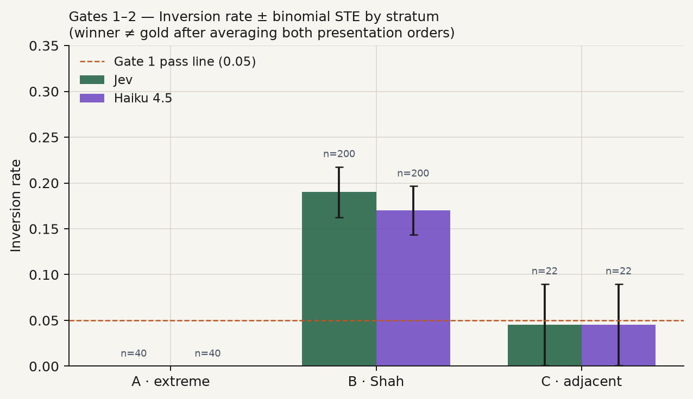
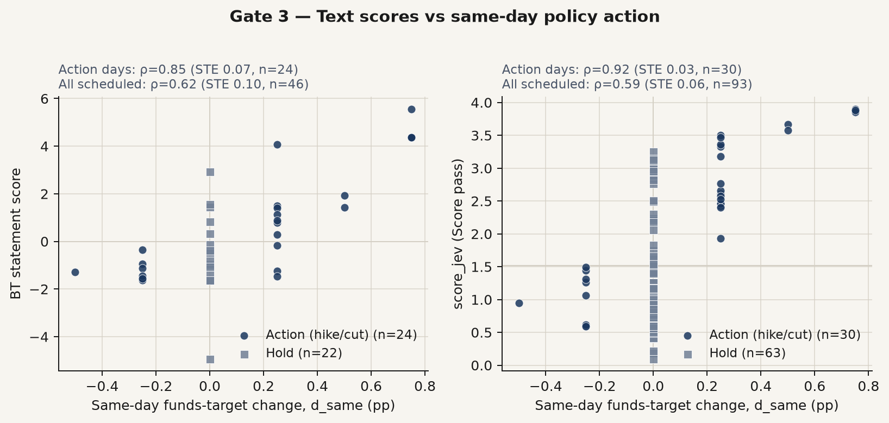
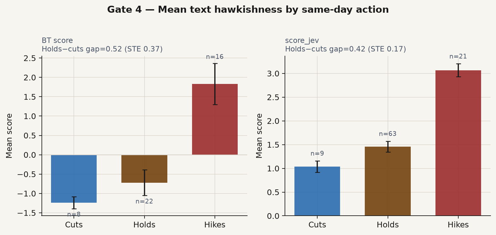
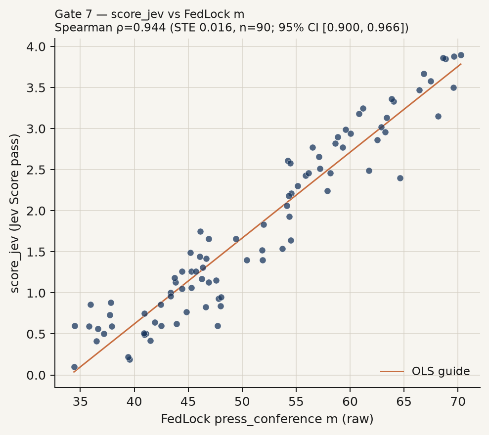
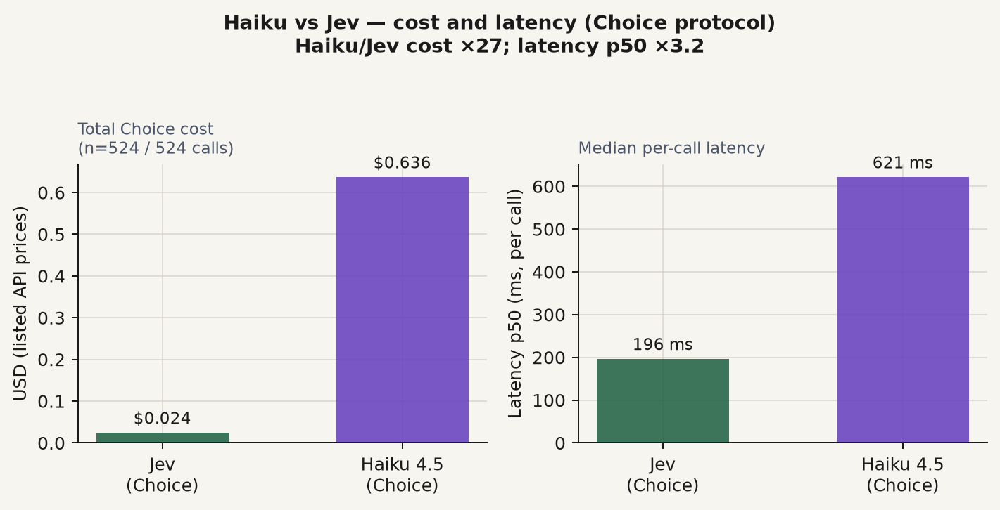
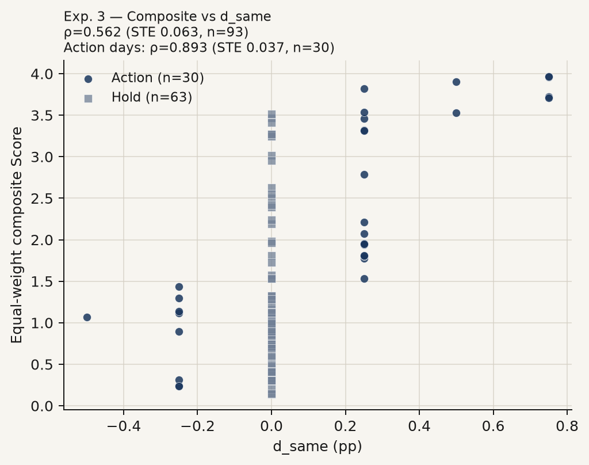
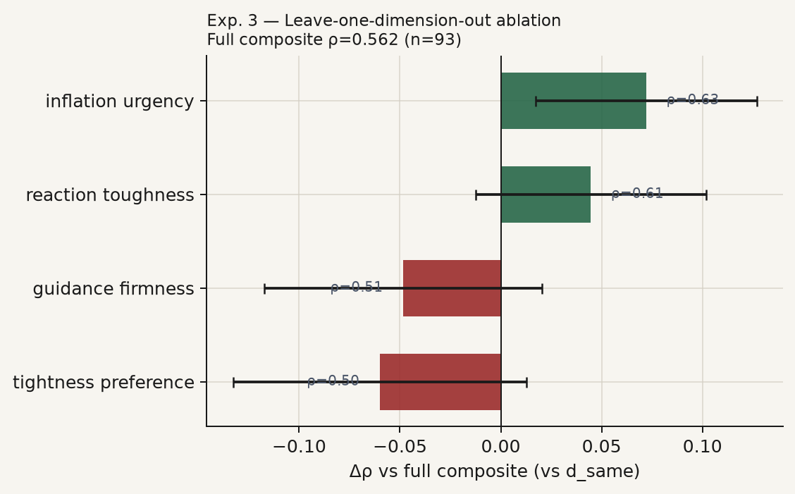
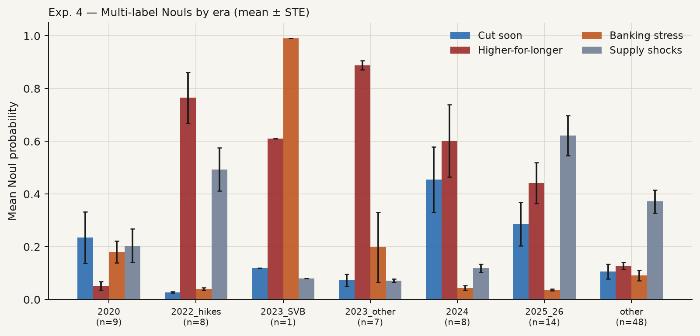
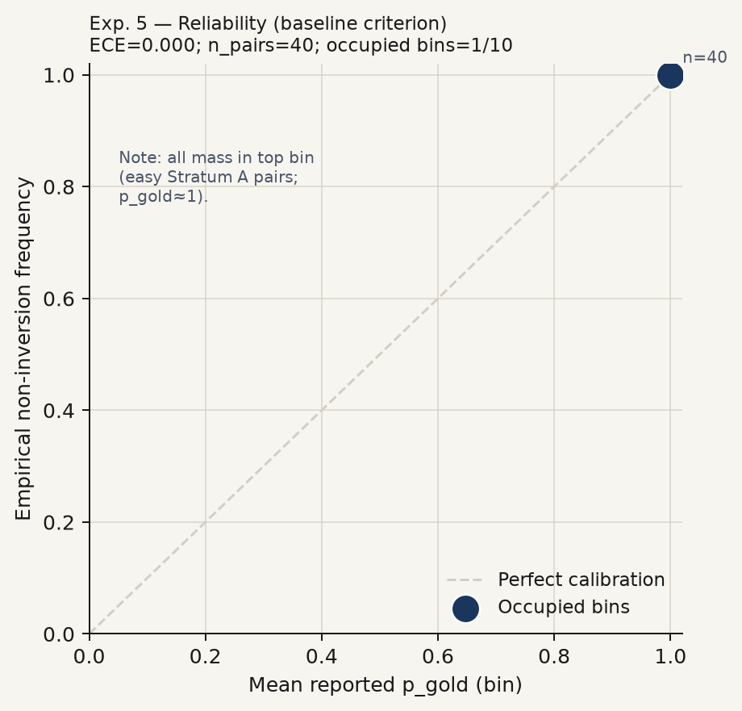
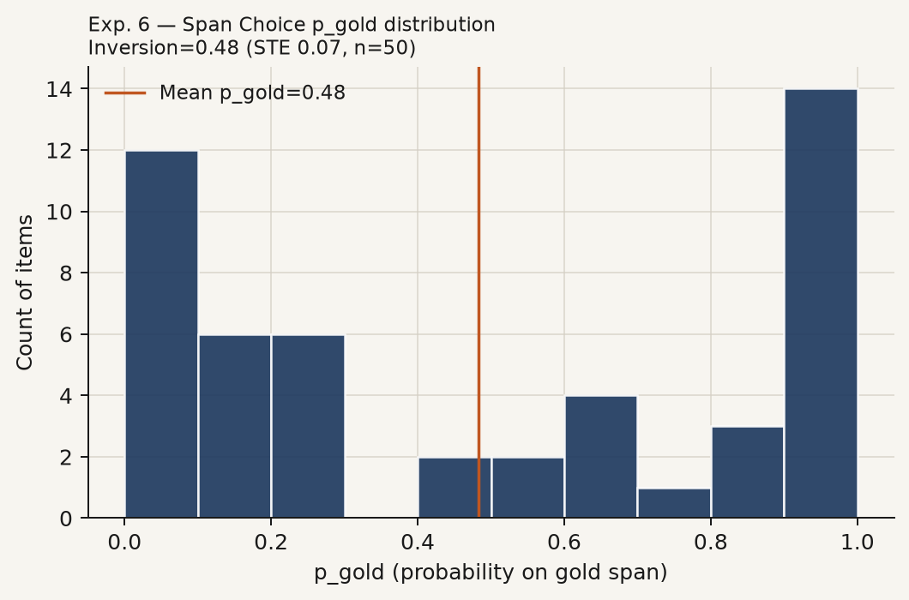
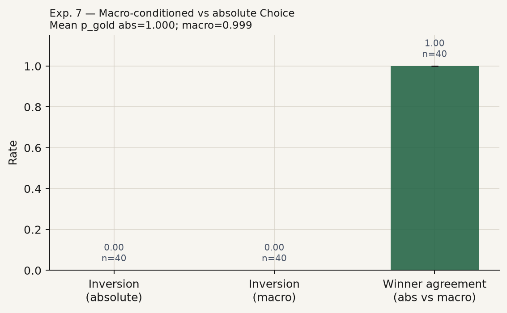
12. FedLock-faithful protocol replication (separate experiment)
Full re-implementation note: results/fedlock_replica/FINDINGS.md. Numbers below are copied from agreement.json and cost_performance.json.
run_id: fedjev-fedlock-replica-2026-09-20 Scope. A separate tournament on the same 95 chair openings, following FedLock V3’s documented protocol. It is not a 4,000-speech / ~60,000-comparison scale copy of published FedLock. It does not replace Gate 7 (rank agreement between the main Bradley–Terry / Score series and published FedLock scores; §6).
What is being compared
Textual hawkishness, not d_same. The replica ranks openings on how hawkish the wording is relative to the macro conditions attached to each text. It does not score against the same-day funds-target change.
TrueSkill, not Bradley–Terry. The main bench fits Bradley–Terry on a fixed gold-pair graph. This replica uses Microsoft TrueSkill: each document starts at prior mean μ₀ = 50 with prior uncertainty σ₀ = 8.33; after each match the winner’s mean rises, the loser’s falls, and both uncertainties shrink. The stop rule σ < 2.0 means “enough matches that further matches are unlikely to reorder this document much.” It is not a hawkishness cutoff.
Macro-conditioned, anonymized pairwise tournament. Each match shows two texts after scripts/strip_meta.py has removed speaker titles, dates, and chair surnames. The judge also sees four Federal Reserve Economic Data series as of that speech date: core personal consumption expenditures inflation (PCEPILFE, year-over-year when computable, otherwise the level); the civilian unemployment rate (UNRATE); real gross domestic product growth (GDPC1, quarter-over-quarter at a seasonally adjusted annual rate when available, otherwise year-over-year); and the CBOE Volatility Index close (VIXCLS). The instruction is relative hawkishness given those conditions. Text A / Text B order is randomized each match.
Three arms. (i) Jev — TypeSafe SystemOne Choice, jev-latest. (ii) Haiku — Claude claude-haiku-4-5-20251001, structured JSON winner and a soft probability. (iii) Published FedLock — frozen m (raw mean), ma (era-adjusted), s, n from data/raw/fedlock/data.json. Llama is not re-invoked.
Pairing and updates. Swiss-style with uncertainty targeting: prefer documents that still have high σ and opponents with similar μ. Soft probabilities update ratings by interpolating a decisive win and a decisive loss, weighted by the judge’s p(A wins). Caps: about 30 comparisons per document, 2,850 globally.
Date match. Offsets 0, +1, −1, +2 on the FedLock d field: 92 of 95 openings matched.
Protocol deviations / notes (observed)
- Corpus is 95 chair openings, not FedLock’s ~4,000-speech pool.
- Soft TrueSkill via
rate_1vs1interpolation is an approximation to FedLock’s documented “updates by judge confidence,” not a bit-exact unpublished kernel. - VIXCLS and GDPC1 were downloaded into
data/raw/fred/so the four-series macro set is complete. - One Haiku comparison failed JSON parse mid-tournament (truncated rationale); that round continued with 46 pairs. The parser was later hardened.
- Both live arms stopped on
all_sigma_lt_2(about 22 comparisons per document on average), below the 30-per-document and 2,850 global caps.
Rank agreement
Spearman’s rank correlation compares two orderings of meetings. Kendall’s rank correlation is the pairwise version of the same question and is typically smaller on the same data. The standard error (s.e.) is the standard deviation of 1,000 bootstrap meeting resamples; the 95 percent interval is the percentile interval from the same resamples (n_boot in agreement.json).
- Jev ↔ Haiku. Spearman = +0.955 (s.e. = 0.012; 95% CI [+0.923, +0.971]; n = 95); Kendall = +0.830 (s.e. = 0.023; 95% CI [+0.784, +0.873]; n = 95).
- Jev ↔ FedLock
m. Spearman = +0.965 (s.e. = 0.011; 95% CI [+0.934, +0.978]; n = 92); Kendall = +0.850 (s.e. = 0.021; 95% CI [+0.806, +0.888]; n = 92). - Jev ↔ FedLock
ma. Spearman = +0.790 (s.e. = 0.044; 95% CI [+0.681, +0.853]; n = 92); Kendall = +0.576 (s.e. = 0.043; 95% CI [+0.492, +0.658]; n = 92). - Haiku ↔ FedLock
m. Spearman = +0.945 (s.e. = 0.013; 95% CI [+0.910, +0.962]; n = 92); Kendall = +0.798 (s.e. = 0.023; 95% CI [+0.753, +0.841]; n = 92). - Haiku ↔ FedLock
ma. Spearman = +0.768 (s.e. = 0.042; 95% CI [+0.666, +0.828]; n = 92); Kendall = +0.550 (s.e. = 0.042; 95% CI [+0.463, +0.629]; n = 92).
Cost and performance (listed prices; not an accuracy claim)
Prices used for the accounting: Jev $0.042 per million input tokens, output free; Haiku $1.0 per million input tokens and $5.0 per million output tokens.
| Arm | Comparisons | Input tokens | Output tokens | USD | Effective $/million tokens | $/comparison | Latency mean / median / 95th percentile (ms) | Comparisons/s |
|---|---|---|---|---|---|---|---|---|
| Jev | 1034 | 3,376,150 | 28,768 | 0.1418 | 0.0416 | 0.000137 | 283 / 271 / 419 | 22.978 |
| Haiku | 1033 | 3,347,688 | 48,412 | 3.5897 | 1.0570 | 0.003475 | 732 / 687 / 988 | 8.156 |
Jev stop: all_sigma_lt_2; max σ = 1.986; fraction with σ < 2 = 1.000. Haiku stop: all_sigma_lt_2; max σ = 1.965; fraction with σ < 2 = 1.000.
Interpretation
Concordance between Jev and Haiku under a shared FedLock-style protocol measures cross-judge stability of relative hawkishness on this openings sample. Concordance with published m / ma asks whether that protocol family, applied to chair openings rather than FedLock’s broader corpus and Llama 3.3 70B judge, recovers a similar meeting-day ordering. Era-adjusted ma removes quarterly means; the gap between the m and ma contrasts partly reflects the era composition of the 2011–2026 openings window.
Cost and latency columns are accounting facts at the listed prices. They are not accuracy claims.
Limitations
- Scale. FedLock reports ~60,000 comparisons on ~4,000 speeches; this run uses 95 openings and a 2,850-comparison cap. Convergence to σ < 2 for every document is not guaranteed at this scale; it occurred here (max σ = 1.986 Jev, 1.965 Haiku).
- Document mismatch. Openings are a subset of press-conference communication; FedLock
press_conferencescores may reflect fuller presser text. - Judge stack. Published FedLock uses Llama 3.3 70B; this replica uses Jev and Haiku. Agreement with
m/mamixes protocol fidelity and model differences. - Soft TrueSkill. Outcome interpolation approximates FedLock’s “updates by judge confidence”; it is not a bit-exact unpublished kernel.
- Macro vintage. FRED series are as-of the speech date from the local dump (plus downloaded VIXCLS / GDPC1). Real-time vintages differ from revised series.
Artifacts
results/fedlock_replica/trueskill_{jev,haiku}.csvresults/fedlock_replica/comparisons_{jev,haiku}.jsonlresults/fedlock_replica/cost_performance.jsonresults/fedlock_replica/agreement.jsonresults/fedlock_replica/fedlock_matches.jsonresults/figures/fedlock_replica_*.pngwhen the replica plotting path is run (also underdocs/figures/)
13. Sensitivity: passage filtering and length (Khaled / jsort)
Scope. Design audit and a small paid pilot only. The frozen main run_id=fedjev-2026-09-20 protocol is unchanged: we do not raise character limits on full pressers, re-run full TrueSkill, or re-run Haiku.
Length vs jsort default 8,000 characters
jsort / jgrep expose --max-chars with default 8000. On our chair-opening corpus (n=95, cleaned text field):
| Statistic | Value |
|---|---|
| Mean characters | 7,917 |
| p50 | 7,547 |
| p90 | 10,823 |
| p95 | 11,706 |
| Max | 13,794 |
| n exceeding 8,000 | 39 |
| Share exceeding 8,000 | 41.1% |
| Main run truncated at 8k? | No (full openings scored) |
Dates over 8k are listed in results/khaled_sensitivity/char_length_audit.json. Figure: docs/figures/char_length_vs_8k.png.
Interpretation. Even among openings (not full pressers), the 8k default is binding for about two-fifths of meetings. That is a property of the tooling default relative to our corpus, not a claim that the main Score/Choice answers truncated mid-document in an undocumented way: the main SystemOne Score pass sent full stripped openings without an 8k client cap. The audit records the jsort design choice for readers who re-rank with jsort/jsort tournaments.
Passage-filter pilot (seed 20260920)
Khaled’s suggested workflow is to filter paragraphs first (jgrep --para "states a view on inflation or the stance of monetary policy"), then sort or score. We sampled 25 scheduled action-day openings (seed fixed; all 25 are action days overlapping the Gate 3 action set). For each meeting we recovered blank-line paragraphs from the presser PDF, ran jgrep --para with that exact criterion, concatenated kept paragraphs, capped at 8,000 characters (jsort-aligned), and re-ran Score only with the same five ordered levels as the main bench. Empty filters would have fallen back to the original opening (filter_empty=true); none did (0 / 25).
| Contrast | Baseline ρ | Filtered ρ | Δρ | s.e.(Δρ) | n |
|---|---|---|---|---|---|
Score vs d_same | +0.927 | +0.927 | +0.0002 | 0.0007 | 25 |
Score vs FedLock m | +0.963 | +0.955 | −0.0089 | 0.0112 | 24 |
| Filtered vs baseline Score | — | +0.991 | — | 0.011 | 25 |
Bootstrap standard errors use 1,000 paired meeting resamples (seed 20260920). New Jev spend for this pilot ≈ $0.005 (jgrep estimate ≈ $0.0034; Score ≈ $0.0017). Machine-readable: results/khaled_sensitivity/filter_pilot.json. Figure: docs/figures/filter_pilot_scores.png.
Interpretation. On action days, filtering to inflation / policy-stance paragraphs leaves the Score nearly unchanged (ρ with baseline ≈ 0.99) and does not move Spearman agreement with d_same by a measurable amount given the paired bootstrap s.e. Agreement with FedLock m shifts by less than one standard error. The pilot therefore does not motivate re-scoring the full frozen corpus under a raised character limit or a mandatory para-filter; it documents robustness of the action-day Score ranking to Khaled’s jsort-oriented preprocessing.
Operational note
If re-running jsort tournaments, set --budget explicitly high enough for completion (or --budget 0); the default dollar budget can stop mid-run. See scripts/README.md.
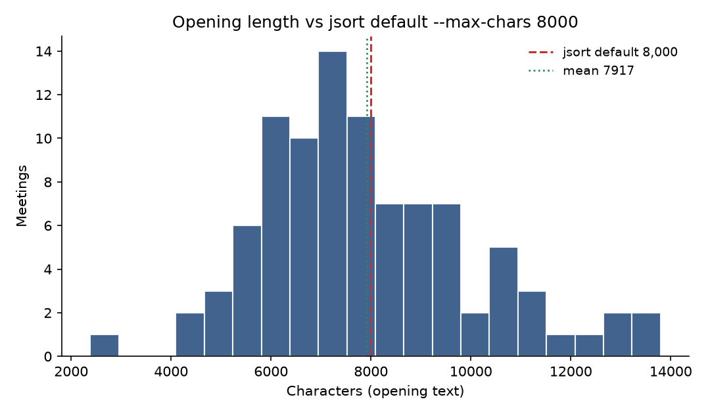
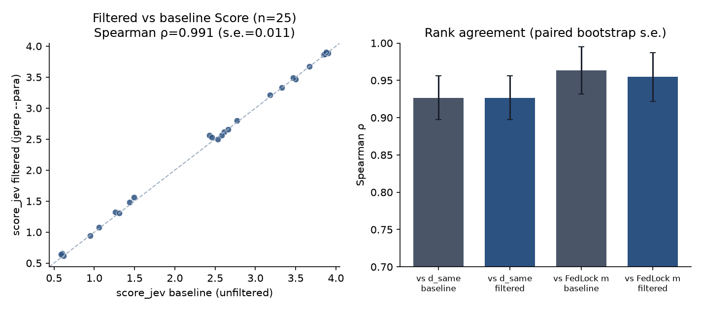
d_same / FedLock m with paired bootstrap standard errors (right).15. Multi-axis TrueSkill extension (Jev only)
Scope. Separate experiment (run_id=fedjev-multiaxis-2026-09-20). Same 95 chair openings (prepared remarks). Q&A drift is out of scope (not vendored). Full-speech robustness is future work. Haiku was not run.
Protocol. For each of seven frozen criteria × two designs (text-only; macro-conditional with Core PCE year-over-year, unemployment rate, real GDP growth QoQ SAAR, VIX, and Chicago Fed National Financial Conditions Index), filter paragraphs with jgrep --para (budget pinned; --max-chars 8000), then run an adaptive TrueSkill tournament (prior μ₀=50, σ₀≈8.33; stop when all σ<2 or ~1,200 comparisons). Choice with randomized presentation order, matching the FedLock replica. Empty-after-filter documents are flagged and fall back to the full stripped opening.
Frozen criteria (exact strings; axis 1 = baseline): see Report multi-axis pre-registration and results/multiaxis/FINDINGS.md.
Cost. Tracked spend ≈ $1.53 (filter accounting ≈ $0.06; Choice ≈ $1.48). Wall ≈ 8.7 minutes. Order-swap check on axis-1 text (n=30 pairs): flip rate 0.0; mean |Δp| ≈ 0.03.
Factor structure
| Design | PC1 variance | PC1 dominant | PC2 variance | PC2 theme (loadings) |
|---|---|---|---|---|
| text | 50.6% | ax1_inflation_hawkish | 19.7% | forward path (−0.61) and FCI restrictiveness (−0.75) |
| conditional | 55.5% | ax1_inflation_hawkish | 17.0% | look-through (−0.59) vs FCI (+0.72) |
Axis 1 is PC1 under both designs. A second factor exists with economic meaning: guidance / financial-conditions language (text) and look-through vs financial-conditions (conditional). It is smaller than PC1.
Near-duplicates to drop (|\rho|≥0.90 vs axis 1): ax7_infl_vs_labor_risk (both designs); under conditional also ax2_emp_vs_infl (strongly negatively correlated — mirror of inflation hawkishness, not a new positive factor).
Validation (action-day Spearman vs d_same, n=30)
| Axis | text ρ (s.e.) | conditional ρ (s.e.) | M1 pass |
|---|---|---|---|
| 1 inflation hawkish | +0.702 (0.121) | +0.827 (0.073) | PASS |
| 2 employment-weight | −0.870 (0.048) | −0.866 (0.047) | fail (sign flip) |
| 3 look-through | −0.505 (0.151) | −0.451 (0.147) | fail |
| 4 forward path | +0.414 (0.125) | +0.513 (0.109) | PASS |
| 5 QT eager | +0.612 (0.116) | +0.715 (0.101) | PASS |
| 6 FCI restrictiveness | +0.765 (0.095) | +0.650 (0.133) | PASS |
| 7 infl. upside > labor | +0.699 (0.106) | +0.815 (0.072) | PASS (near-dup of 1) |
SEP medians: not vendored — skipped. QT pace numeric label: not in meetings.csv — axis 5 uses d_same / d_2y only. USD / NFCI day-change proxies: see results/multiaxis/gates.json. FedLock m agreement: axis 1 only (secondary).
Filter emptiness (important): axes 2 and 7 emptied 61 and 66 of 95 openings respectively (few paragraphs match those narrow intents); those documents fell back to full openings. Axis 3 emptied 36. Interpret sparse-axis ranks with that caveat.
Does “something else” survive?
Partially. After tightness, inflation-hawkish language remains the dominant common factor (PC1). A smaller second factor loads on forward-guidance / financial-conditions (and, conditionally, look-through). Axis 7 is redundant with axis 1. Axes 2–3 fail the funds-target construct check (negative ρ). Axes 4–6 pass M1 but are not a second PC1-sized dimension. Text ranks do not cause rate changes.
The Pages note (docs/multiaxis.html; source results/multiaxis/FINDINGS.md) walks a mid-career economist through the seven frozen criterion strings, the text-only versus macro-conditional designs, a worked example (2 November 2022, Chair Powell, d_same = +0.75), and the factor / gate tables. New overview figures live in results/multiaxis/figures/. The tournament script’s original panels remain below.
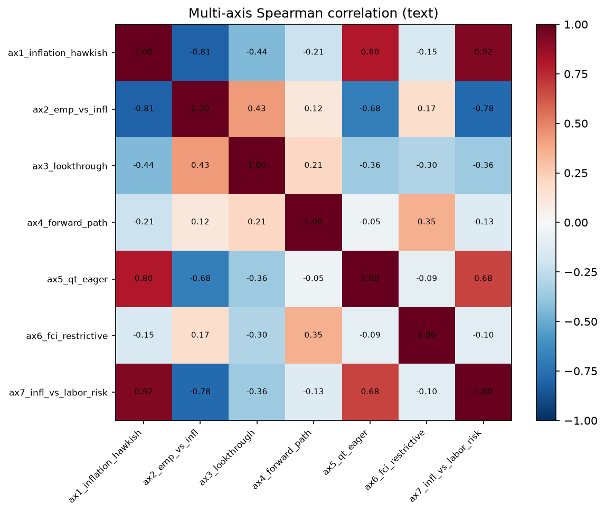
results/multiaxis/corr_text.csv.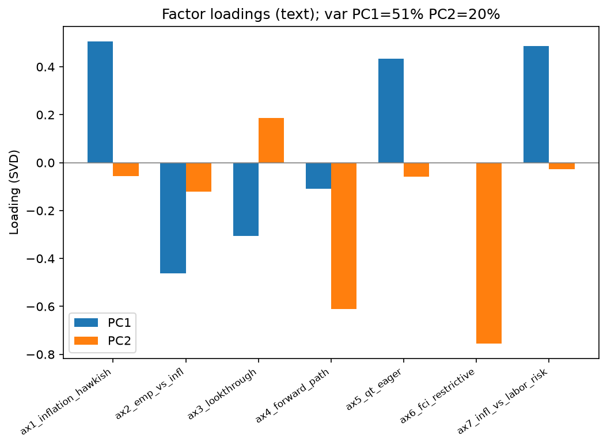
results/multiaxis/loadings_text.csv.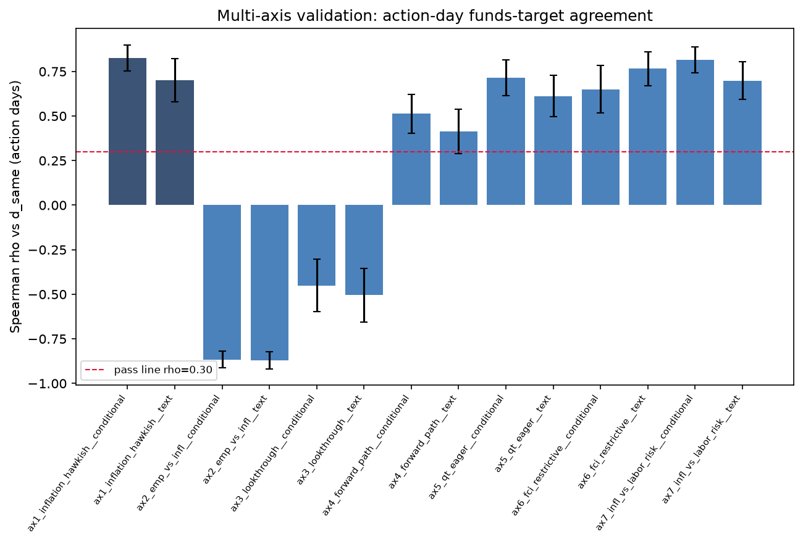
d_same by axis × design, n = 30, error bars = bootstrap standard error. Pass line ρ = +0.30. Axes 2–3 are negative. Source: results/multiaxis/gates.json.Artifacts: results/multiaxis/ · Pages: docs/multiaxis.html.
16. Ethics and licenses
| Asset | Status |
|---|---|
| Code | MIT |
| FOMC openings | U.S. government works; cite federalreserve.gov; no Fed endorsement |
| FRED | St. Louis Fed terms |
| Shah | CC BY-NC 4.0 — attribution; non-commercial; full dump not vendored |
| jsort | MIT |
| FedLock | Upstream site terms; snapshot used as a published-score reference for Gate 7 and as the third arm of the §12 replica. Llama is not re-invoked. |
Research instrumentation only; not investment advice.
Citation
See CITATION.